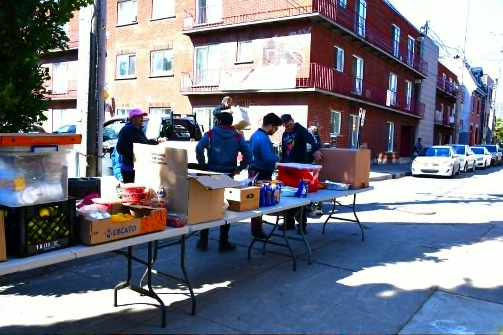

Trois sections consécutives. Même taille de titre, même centrage, même marge de 96 px, même photo arrondie.
Quatre services, chaque semaine, auprès des plus démunis.
Une chaîne simple et directe, sans intermédiaire ni frais d'administration.
Chaque sortie est annoncée et racontée sur notre groupe Facebook.

Mêmes mots, mêmes couleurs, mêmes étiquettes. Seules changent la taille des titres, l'alignement, le rythme et le traitement de la photo.
Quatre services, chaque semaine, auprès des plus démunis.
Une chaîne simple et directe, sans intermédiaire ni frais d'administration.
Chaque sortie est annoncée et racontée sur notre groupe Facebook.